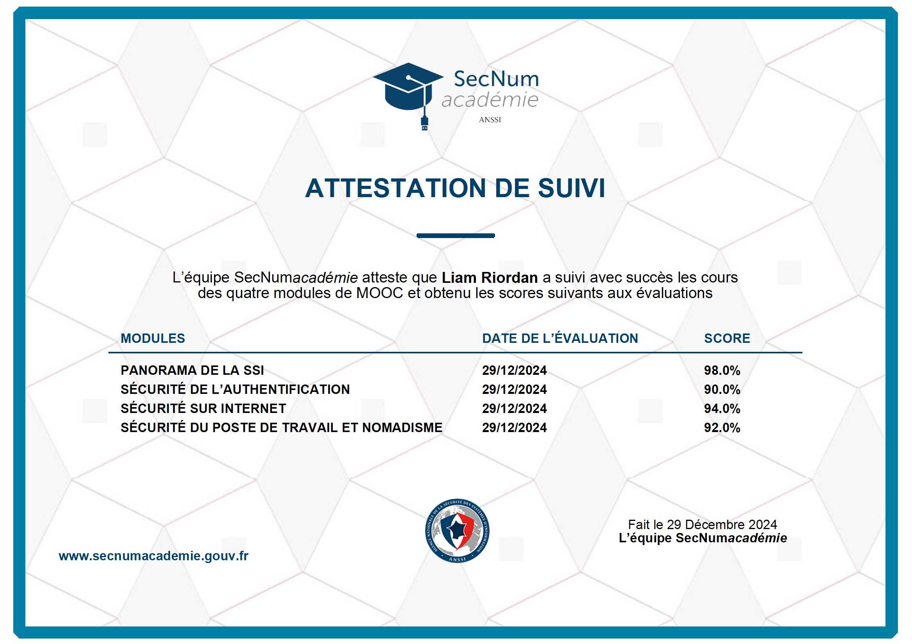

TrueNAS Storage Server
Built a NAS with TrueNAS to centralize storage, improve file organization, and support backup and home lab usage.
BTS SIO SISR Student
Future Network & Systems Administrator Specialized in networking, virtualization, and infrastructure deployment
Rennes, France
Currently completing BTS SIO SISR at Aftec and actively seeking an alternance in cybersecurity. Passionate about IT, networking, systems administration, and infrastructure security, with strong hands-on experience in virtualization, server administration, and technical support. English native, French bilingual, based in Rennes, with the goal of continuing into engineering school next year.
Tech Support Intern, La Metairie & Cottages
Deployed a network extension to holiday homes and helped prepare office IT equipment for use.
Supported website follow-up in SquareSpace and handled ticket tracking and incident management on the IT park.
Returned on a second contract in January-February 2026 to continue infrastructure follow-up, website support, and day-to-day IT assistance.
Conseiller clientele, La Metairie & Cottages
Managed reservations, customer follow-up, and complaint resolution for an international client base.
Delivered service in French, English, and Spanish while helping improve repeat bookings through responsive support.
Assistant Directeur des Operations, Les Bergeronnettes
Supported daily operational management, planning, and performance reporting.
Analyzed existing processes and helped implement improvements that increased efficiency and reduced operational costs.
Freelance BTP (independent)
Managed construction/renovation projects end-to-end
Aftec, Rennes
Currently enrolled • Systems and Network Infrastructure
Comnicia
Commercial Operations Management
Université de Bretagne Occidentale
Computer Science Foundation
Secondary diploma in management and business studies
Reconstructed from my BTS SIO E5 synthesis sheet to show the main professional realizations and the competency areas mobilized in each project.
Built a NAS with TrueNAS to centralize storage, improve file organization, and support backup and home lab usage.
Set up a personal media platform with Jellyfin to stream films and series across devices on the home network.
Configured Pi-hole as a DNS-level ad blocker to filter unwanted traffic across the entire home network.
Deployed an OpenVPN service to securely access the home network remotely and reinforce personal network security.
| Context | Project | IT Assets | Support | Online | Project | Service | Professional Dev |
|---|---|---|---|---|---|---|---|
| Training Projects | |||||||
| Training | Personal portfolio website | x | x | ||||
| Training | Legal notices for website / portfolio | x | |||||
| Training | GPO deployment in an Active Directory domain | x | x | ||||
| Training | Multi-user Minecraft server setup and administration | x | x | x | |||
| Training | pfSense firewall deployment and network security | x | x | x | |||
| Training | Professional LinkedIn profile setup and optimization | x | x | ||||
| Training | GLPI incident and support request management | x | |||||
| Training | Secure VPN service with FortiGate | x | x | x | |||
| Training | NAS backup system deployment | x | x | x | |||
| Training | Service monitoring with Zabbix and Grafana | x | x | x | x | ||
| Training | Backup automation with Bacula and crontab | x | x | x | |||
| Professional Projects During First Year | |||||||
| Work Experience | Website implementation | x | x | x | |||
| Work Experience | Technical incident follow-up and adjustments | x | x | ||||
| Professional Projects During Second Year | |||||||
| Work Experience | Website maintenance, monitoring, and evolution | x | x | x | |||
| Work Experience | New backup system deployment | x | x | x | |||
| Work Experience | Technical incident follow-up and adjustments | x | x | ||||



Email: liam.riordan@aftec.org
GitHub: github.com/ArmpitWeasel
Legal Notice: View the dedicated page